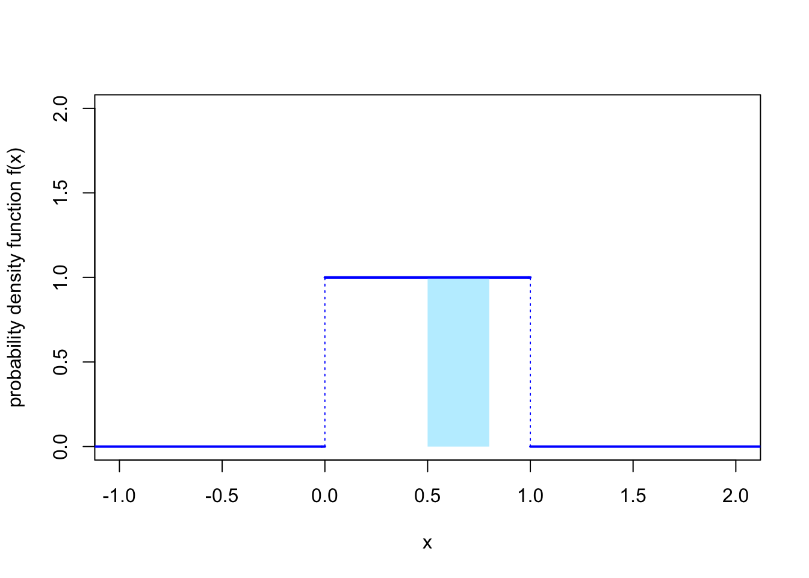
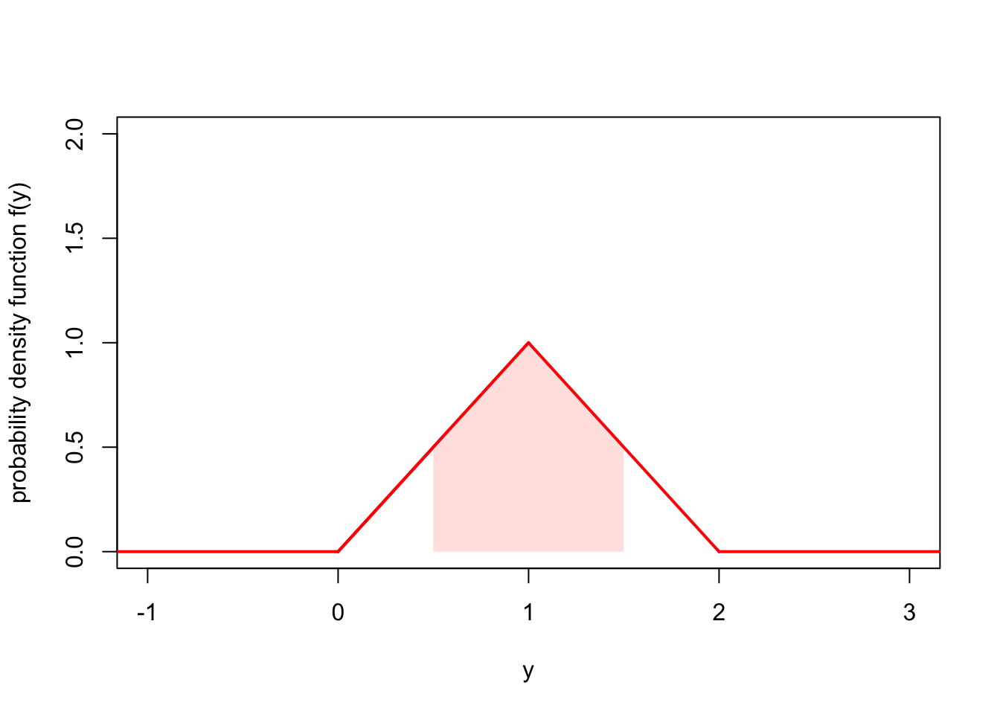
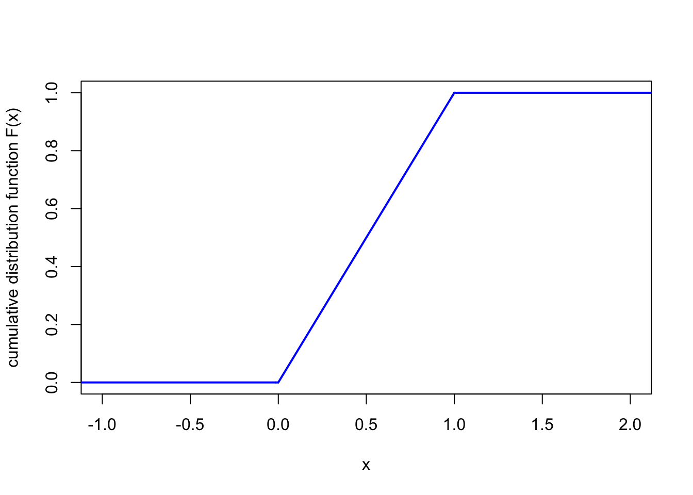
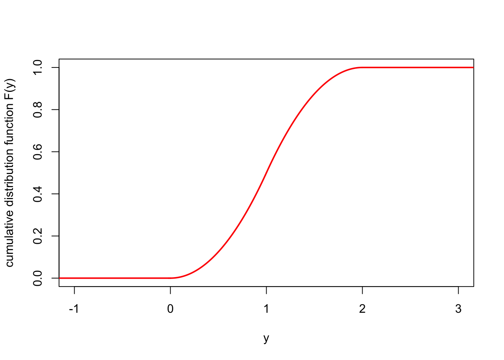

Lecture 15 Continuous random variables
15.1 What is a continuous random variable?
In the previous six lectures, we have looked at discrete random variables, whose range is a finite or countably infinite set of separate discrete values. Discrete random variables can be used as a model for “count data”.
In this section and the next, we will instead look at continuous random variables, whose range is an uncountable set, a continuum of gradually varying values. Continuous random variables can be used as a model for “measurement data”.
For example:
The assets of a bank at the end of this year could be modelled as a continuous random variable with range the real numbers \(\mathbb R\), where positive numbers represent credit and negative numbers represent debt.
The amount of time a machine in a factory works for before breaking down could be modelled as a continuous random variable with range the positive real numbers \(\mathbb R_+ = \{x \in \mathbb R : x \geq 0\}\).
The unemployment rate in the UK next January, as a proportion of the population, could be measured as a continuous random variable with range the interval \([0, 1] = \{x \in \mathbb R : 0 \leq x \leq 1\}\).
Imagine firing an arrow at a large target. We could ask “What’s the probability that the arrow exactly hits a certain point?” – but this question is difficult to answer. What do we mean by a point? If we mean a mathematically-idealised infinitesimally small point, then I think we’d have to say that the probability of hitting it exactly is 0. What makes more sense is to take a section of the target – perhaps a small circle in the middle, called the “bulls-eye” – and ask what is the probability that the arrow lands in the area of the bulls-eye. Then we could (at least in theory) answer that question – a good archer would have quite a high probability of landing the arrow in the bulls-eye, while a poor archer would have a smaller chance.
Similarly, imagine picking a random real number between 0 and 1. We could ask “What is the probability that the random number is exactly \(1/\sqrt{2} = 0.7071068\dots\)?” But that probability, if we mean exactly hitting an infinite decimal, surely must be 0. It makes more sense to take an interval of numbers – say, \([0.7, 0.8]\), the interval from \(0.7\) to \(0.8\) – and ask what the probability is of the random number being in that interval.
This is how continuous random variables work. The probability a continuous random variable \(X\) exactly hits some value \(x\) is \(\mathbb P(X = x) = 0\). But we can find the probability \(\mathbb P(a \leq X \leq b)\) that \(X\) lies in a certain interval and work with that.
15.2 Probability density functions
With a continuous random variable, the probability of exactly getting any particular outcome \(X = x\) is 0. However, we can express the “intensity” of probability around \(x\) by \(f_X(x)\), where \(f_X\) is called the “probability density function”.
The mass/density metaphor here is that, for a discrete random variable, we have probability “mass” at the point \(x\); whereas for continuous random variables, we have a “density” of probability around \(x\).
Definition 15.1 A random variable \(X\) is called a continuous random variable if the probability of landing in any interval between \(a\) and \(b\), for \(a \leq b\), can be written as \[ \mathbb P(a \leq X \leq b) = \int_a^b f_X(x) \, \mathrm{d}x , \] for some non-negative function \(f_X\). The function \(f_X\) is called the probability density function (or PDF).
In other words, the probability that \(X\) is between \(a\) and \(b\) is the area under the curve of the PDF \(f_X(x)\) between \(x = a\) and \(x = b\).
As with PMFs, when it’s obvious what random variable we’re dealing with, we omit the subscript \(X\) on the PDF \(f_X\).
Example 15.1 Let \(X\) be a continuous random variable with PDF \[ f(x) = 1 \qquad \text{for $0 \leq x \leq 1$} \] and \(f(x) = 0\) otherwise. This represents a random number between 0 and 1, where the intensity of the probability is equal across the whole interval. This is known as a continuous uniform distribution.

What is the probability that \(X\) is between 0.5 and 0.8?
We can calculate this using the definition above. We have \[\begin{align*} \mathbb P(0.5 \leq X \leq 0.8) &= \int_{0.5}^{0.8} f(x) \, \mathrm dx \\ &= \int_{0.5}^{0.8} 1 \, \mathrm dx \\ &= [x]_{0.5}^{0.8} \\ &= 0.8 - 0.5 \\ &= 0.3 . \end{align*}\]
Example 15.2 Let \(Y\) be a continuous random variable with PDF \[ f(y) = \begin{cases} y & \text{for $0 \leq y \leq 1$} \\ 2-y & \text{for $1 < y \leq 2$} \end{cases} \] and \(f(y) = 0\) otherwise. This represents a continuous value between 0 and 2 where the probability intensity is highest in the middle around 1 and is lower at the edges near 0 and 2.

What is the probability \(X\) is between \(\frac12\) and \(\frac32\)?
As before, we have \[ \mathbb P\big( \tfrac12 \leq Y \leq \tfrac32 \big) = \int_{\frac12}^{\frac32} f(y) \, \mathrm dy . \] But this time we have to be careful, because \(f(y)\) has different expressions below 1 and above 1. We will split the integral up into two parts based on this, to get \[\begin{align*} \mathbb P\big( \tfrac12 \leq Y \leq \tfrac32 \big) &= \int_{\frac12}^{1} f(y) \, \mathrm dy + \int_{1}^{\frac32} f(y) \, \mathrm dy \\ &= \int_{\frac12}^{1} y \, \mathrm dy + \int_{1}^{\frac32} (2-y) \, \mathrm dy \\ &= \left[ \tfrac12 y^2\right]_{\frac12}^1 + \left[ 2y-\tfrac12 y^2\right]_1^{\frac32} \\ &= \tfrac12 - \tfrac18 + \big(\tfrac62 - \tfrac98\big) - \big(2 - \tfrac12\big) \\ &= \tfrac34 . \end{align*}\]
15.3 Properties of continuous random variables
The good news is that almost all of the properties we know and love about discrete distributions also follow through for continuous distribution – except you swap the PMF for the PDF and swap sums for integrals.
| Discrete random variables | Continuous random variables |
|---|---|
| A discrete random variable \(X\) is defined by a probability mass function (PMF) \(p(x)\), which represents the probability of getting exactly \(x\). | A continuous random variable \(X\) is defined by a probability density function (PDF) \(f(x)\), which represents the intensity of probability around \(x\). |
| The PMF is positive, in that \(p(x) \geq 0\) for all \(x\). | The PDF is positive, in that \(f(x) \geq 0\) for all \(x\). |
| The PMF sums to 1, in that \[ \sum_{x} p(x) = 1. \] | The PDF integrates to 1 in that \[ \int_{-\infty}^{\infty} f(x) \, \mathrm{d}x = 1.\] |
| The cumulative distribution function (CDF) is \(F(x) = \mathbb P(X \leq x)\), and is given by a sum \[ F(x) = \sum_{y \leq x} p(y) .\] | The cumulative distribution function (CDF) is \(F(x) = \mathbb P(X \leq x)\), and is given by an integral \[ F(x) = \int_{-\infty}^x f(y) \, \mathrm{d}y .\] |
| The expectation is the sum \[ \mathbb EX = \sum_{x} x\,p(x) . \] | The expectation is the integral \[ \mathbb EX = \int_{-\infty}^{\infty} x\,f(x)\,\mathrm dx . \] |
| The expectation of a function \(g(X)\) of \(X\) is the sum \[ \mathbb Eg(X) = \sum_{x} g(x)\,p(x) . \] | The expectation of a function \(g(X)\) of \(X\) is the integral \[ \mathbb Eg(X) = \int_{-\infty}^{\infty} g(x)\,f(x)\,\mathrm dx . \] |
| Linearity of expectation says that \[ \mathbb E(aX+b) = a\mathbb EX + b .\] | Linearity of expectation says that \[ \mathbb E(aX+b) = a\mathbb EX + b .\] |
| The variance is \(\operatorname{Var}(X) = \mathbb E(X - \mu)^2\), which also has the computational formula \(\operatorname{Var}(X) = \mathbb EX^2 - \mu^2\). | The variance is \(\operatorname{Var}(X) = \mathbb E(X - \mu)^2\), which also has the computational formula \(\operatorname{Var}(X) = \mathbb EX^2 - \mu^2\). |
Note, however, one property that doesn’t follow through: Because, for a PMF, \(p(x) = \mathbb P(X = x)\) represented a probability, we had \(p(x) \leq 1\) for all \(x\). However, because, for a PDF, \(f(x)\) only represents intensity of probability, there’s no contradiction to having \(f(x) > 1\) (although keeping the integral to 1 means that we can’t have \(f(x) > 1\) too much). So \(f(x) = 10\) for \(0 <x < 0.1\) and \(f(x) = 0\) otherwise is a perfectly legitimate PDF, for example.
Example 15.3 Let’s return to the case where \(X\) be a continuous uniform distribution, with \[ f(x) = 1 \qquad \text{for $0 \leq x \leq 1$} \] and \(f(x) = 0\) otherwise. Let’s go through the properties from the table above.
First, it’s clear that \(f(x) \geq 0\) for all \(x\).
Second, the PDF does indeed integrate to 1, because \[ \int_{-\infty}^\infty f(x) \, \mathrm dx = \int_0^1 1 \, \mathrm dx = [x]_0^1 = 1 . \] Because this PDF is zero below 0 and above 1, we only had to integrate between 0 and 1, with the rest of the integral over the real line being 0.
Third, the CDF \(F\). It’s clear that \(F(x) = \mathbb P(X \leq x) = 0\) for \(x < 0\), and \(F(x) = \mathbb P(X \leq x) = 1\) for \(x > 1\). In between, we have \[ F(x) = \int_{-\infty}^x f(y) \,\mathrm dy = \int_0^x 1\, \mathrm dy = [y]_0^x = x . \] So, altogether, the CDF is \[ F(x) = \begin{cases} 0 & \text{for } x < 0 \\ x & \text{for }0 \leq x \leq 1 \\ 1 & \text{for }x > 1 . \end{cases} \]

Fourth, the expectation is \[ \mathbb EX = \int_{\infty}^\infty x\,f(x)\,\mathrm dx = \int_0^1 x \, \mathrm dx = \left[\tfrac12 x^2 \right]_0^1 = \tfrac12 - 0 = \tfrac12 . \]
Finally, to calculate the variance using the computational formula \(\operatorname{Var}(X) = \mathbb EX^2 - \mu^2\), we first need \(\mathbb EX^2\). This is \[ \mathbb EX^2 = \int_{\infty}^\infty x^2\,f(x)\,\mathrm dx = \int_0^1 x^2 \, \mathrm dx = \left[\tfrac13 x^3 \right]_0^1 = \tfrac13 - 0 = \tfrac13 . \] So, the variance is \[ \operatorname{Var}(X) = \mathbb EX^2 - \mu^2 = \tfrac13 - \left(\tfrac12\right)^2 = \tfrac13 - \tfrac14 = \tfrac{1}{12} . \]
Example 15.4 Let’s also return to the “triangular” PDF from Example 15.2, \[ f(y) = \begin{cases} y & \text{for $0 \leq y \leq 1$} \\ 2-y & \text{for $1 < y \leq 2$} \end{cases} \] and \(f(y) = 0\) otherwise. We’ll just do the CDF and the expectation. (You can do the others yourself, if you like.)
For the CDF, it’s clear that \(F(y) = 0\) for \(y < 0\) and \(F(y) = 1\) for \(y > 2\). Again, we split the \(0 \leq y \leq 1\) case and the \(1 < y \leq 2\) case. In the first case, for \(0 \leq y \leq 1\), we have \[\begin{align*} F(x) &= \int_{-\infty}^y f(z) \, \mathrm dz \\ &= \int_0^y z \, \mathrm dz \\ &= \left[ \tfrac12 z^2 \right]_0^y \\ &= \tfrac 12 y^2 . \end{align*}\] In the second case, for \(1 < y \leq 2\), we have \[\begin{align*} F(x) &= \int_{-\infty}^y f(z) \, \mathrm dz \\ &= \int_0^1 z \, \mathrm dz + \int_1^y (2 - z)\,\mathrm dz \\ &= \left[ \tfrac12 z^2 \right]_0^1 + \left[ 2z - \tfrac12 z^2 \right]_1^y \\ &= \tfrac 12 - 0 + 2y - \tfrac12 y^2 - 2 + \tfrac12 \\ &= 2y - \tfrac12 y^2 - 1 . \end{align*}\] Hence, the CDF is \[ F(y) = \begin{cases} 0 & \text{for $y < 0$} \\ \tfrac12 y^2 & \text{for $0 \leq y \leq 1$} \\ 2y - \tfrac12 y^2 - 1 & \text{for $1 < y \leq 2$} \\ 1 & \text{for $y > 2$}. \end{cases} \]

For the expectation, we have \[\begin{align*} \mathbb EY &= \int_{-\infty}^{\infty} y\, f(y) \, \mathrm dy \\ &= \int_0^1 y^2 \mathrm dy + \int_1^2 y(2 - y)\, \mathrm dy \\ &= \left[ \tfrac13 y^3 \right]_0^1 + \left[ y^2 - \tfrac13 y^3 \right]_1^2 \\ &= \tfrac13 - 0 + 4 - \tfrac83 - 1 + \tfrac13 \\ &= 1 . \end{align*}\]
Summary
- A continuous random variable is defined by its probability density function \(f\), where \[ \mathbb P(a \leq X \leq b) = \int_a^b f(x) \, \mathrm dx . \]
- Most properties of discrete random variables hold, with the PMF replaced by the PDF, and sums by integrals.
- For example, the expectation is \(\mathbb EX = \displaystyle\int_{-\infty}^\infty x\, f(x) \, \mathrm dx\).